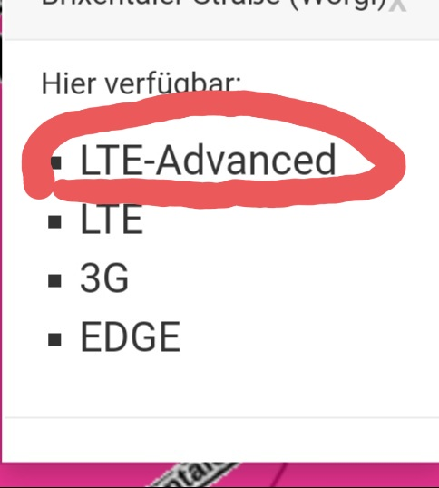

Hi!
habe seit heute einen neuen router Model: Huawei B535-232 mit dem Tarif Internet Flex 40: 40mbits/download. Habe den Router per lan kabel mit der Ps4 verbunden und verwende den Router ausschließlich zum Online-Spielen. Mache ich nun einen Speedtest mit der Ps4 kommt eine Downloadgeschwindigkeit von max 11 mbits/download heraus. Ich erwarte mir keine max Geschwindigkeit von den versprochenen 40mbits, jedoch habe ich sehrwohl mit einer Downloadgeschw. von mind 20mbits gerechnet! Meine Frage ist, warum ich nicht einmal die Hälfte der versprochenen Mbits bekomme?
bitte um Hilfe!
Mit freundlichen Grüßen
Die Frage können wir im Forum nicht so einfach beantworten.
Es kann vieles die Ursache sein. Meistens ist entweder der Empfang oder die Auslastung daran schuld. (In manchen Fällen sogar beides)
Die Auslastung wird nicht rund um die Uhr gleich sind. Am Vormittag sollte dann mehr möglich sein, wenn es an der Auslastung liegt.
Um zum Empfang etwas sagen zu können, poste bitte die Empfangswerte aus der Routeroberfläche.
Hallo @Stefan Adorjan
Internet über Mobilfunk ist ein shared Medium-. Alle Nutzer einer LTE-Funkzelle müssen sich die zur Verfügung stehende Maximalbandbreite teilen. Je nachdem, wie groß die Funkzelle ist, wie dicht das von ihr versorgte Gebiet von LTE-Nutzern besiedelt ist und welche Frequenz sie nutzt, kann das dazu führen, dass die Geschwindigkeit pro Nutzer sinkt. Zudem kommt es auch darauf an, wie weit du von der Mobilfunkzelle entfernt wohnst bzw. auf die baulichen Gegebenheit deiner Wohnung oder Haus. Versprechen kann man somit keine Bandbreite.
Hast du schon versucht einen anderen Standort für deinen Router zu finden?
Tritt der Geschwindigkeitseinbruch nur zur Primetime auf oder auch Untertags?
Hast du die Möglichkeit auf eine DSL oder sogar Kabelanschluss? Das würde auch bessere Ping Zeiten bringen, dass ja für Gamer sehr wichtig sein kann.
bezüglich des Standortes, hilft jegliche Positionsveränderung nichts. Mein Wlan steht direkt neben dem Fenster und ist mittels Lan mit der Ps4 verbunden.
Egal wann ich einen Geschwindigkeitstest durchführe es kommt nie mehr wie max 11 mbits Download raus!
ich habe einen test an meinem Macbook durchgeführt, vllt könnt ihr hier Probleme erkennen!
Bearbeitet von Sarah_
Empfängst du LTE Advanced also bündelt dein B535 Frequenzen? Erkennbar im Webinterface an einem + neben oder vor der Magenta/T-mobile Netzanzeige. Versuche auch wenn möglich einen Speedtest über LAN ohne weiteren Geräte im Netzwerk.
Bearbeitet von Rexalius2000
Wie gesagt ich habe meine Ps4 per Lan mit dem Modem verbunden! Max 11 mbits download!
Nein ich empfange nicht Lte +
Schaut so aus,dass du nur 1 Frequenzband empfängst, vermutlich Band 20 (800 MHz) das meistens eine große Auslastung hat aufgrund der hohen Reichweite.
Was sagt die Netzabfrage ? Ist LTE Advanced in deinem Ort verfügbar? https://www.magenta.at/netz

nein wird nur LTE unterstützt!
Okay, danke für die Information. Dann ist meine Vermutung wohl (leider) richtig.
Dies ist also der Grund, weshalb ich niederige Downloadgeschwindigkeiten habe?! Lösung hierzu gibt es wsl keine?
Wechsel auf einen stabilen DSL/Kabel Anschluss könnte eine Lösung sein. Hier kannst du nachsehen, was an Geschwindigkeit über DSL bei dir Verfügbar wäre. Gerne kannst du auch einen Screenshot davon (ohne Wohnadresse bitte) posten wenn du Hilfe benötigst.
Was bedeutet das nun?
Die Geschwindigkeit über DSL(Kupferkabel der A1) beträgt derzeit im Download maximal 12 MBit/s und 1 MBit/s im Upload. Man könnte versuchen auf Hybrid zu wechseln also eine Kombination von DSL und Mobilfunk. Hybrid kombiniert zwei Technologien, die sich gegenseitig ergänzen und gemeinsam mehr erreichen können. Allerdings mehr als ca. 20 MBit/s im schlimmsten Fall 12 wenn die Mobilfunkzelle komplett ausgelastet ist wirst du auch mit dieser Kombination nicht erreichen. Die 12/1 MBit/s über die Kupferleitung hast du allerdings konstant rund um die Uhr.
Bei diesen Leitungswerten würde ich von Hybrid eher abraten.
Ich fürchte, da wird Internetmäßig nicht mehr viel machbar sein. Man könnte noch versuchen bei LTE etwas zu optimieren, mit Antennen und Routerstandort. Wenn man damit einen anderen Sender erreichen kann, könnte vielleicht etwas mehr machbar sein.
vor 6 Minuten schrieb IT-Freak:Bei diesen Leitungswerten würde ich von Hybrid eher abraten.
Naja dem kann ich nicht ganz zustimme, er hätte dann wenigstens die die 12/1 MBit/s konstant und mit den derzeitigen Werten über LTE dann knapp um die 20 MBit/s im Download was sich aber je nach Auslastung der Zelle natürlich ändern kann. Im Besten Fall geht es nach oben. Für mich schaut das so aus, dass in seinem Ort viele User ein Mobiles oder Hybrid Internet verwenden bei diesen Leitungswerten. Darf ich fragen wo genau das im Burgenland ist?
Bearbeitet von Rexalius2000Das mit 12/1 sind bis zu Werte die Bedeuten, dass definitiv nicht 12/1 erreicht wird, da sonst in dieser Ansicht 20MBit/s stehen würde.
@Stefan Adorjan da gibt es weiter unten auf der Seite die Info, was halbwegs realistisch ankommen sollte.
Laut Screenshot schafft die Leitung die 12/1 vermutlich auch ohne Bonding. Der Rest kommt über LTE sprich Mobilfunk, daher komme ich auf ca. 20 MBit/s insgesamt die natürlich schwanken können.
Bearbeitet von Rexalius2000im Bezirk Oberwart also im Südburgenland! Adresse 7432 Oberschützen
Habe noch einen Screenshot für euch!
Okay, noch schlimmer als erwartet
vor 2 Stunden schrieb Rexalius2000:Laut Screenshot schafft die Leitung die 12/1 vermutlich auch ohne Bonding. Der Rest kommt über LTE sprich Mobilfunk, daher komme ich auf ca. 20 MBit/s insgesamt die natürlich schwanken können.
Bei den bis zu werten ist es immer so, dass wenn das nächste niedrigere Profil überschritten wird, würde einem das Nächste angeboten werden.
vor 2 Stunden schrieb Stefan Adorjan:
Ja, da kann man leider DSL für fast alles vergessen.
{kind=link}
{kind=link}
{kind=link}
{kind=link}
{kind=link}